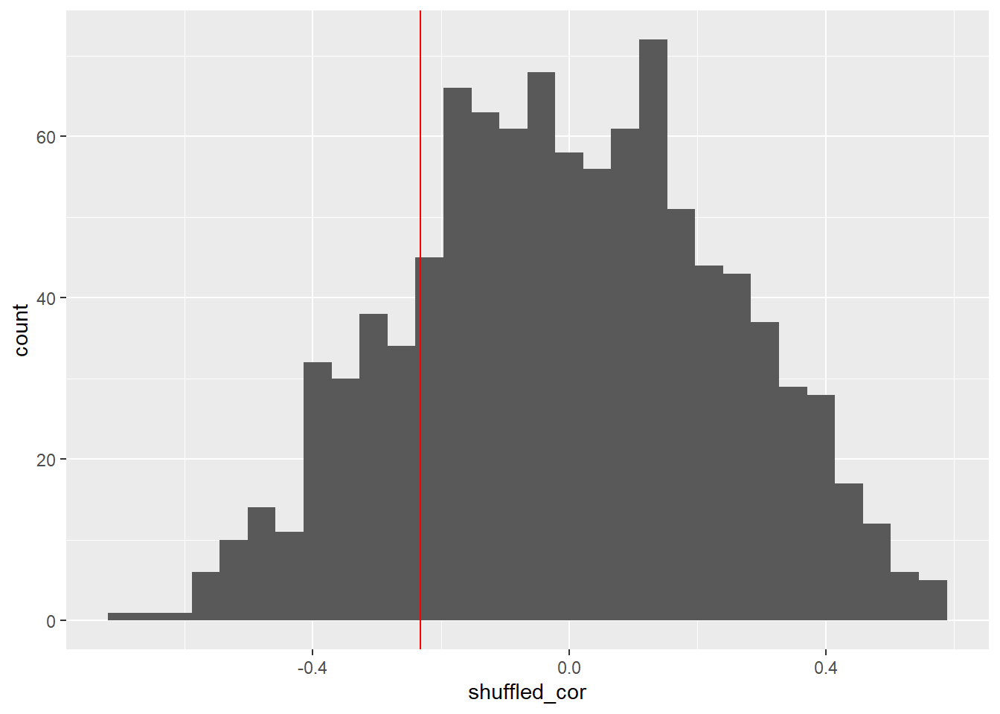
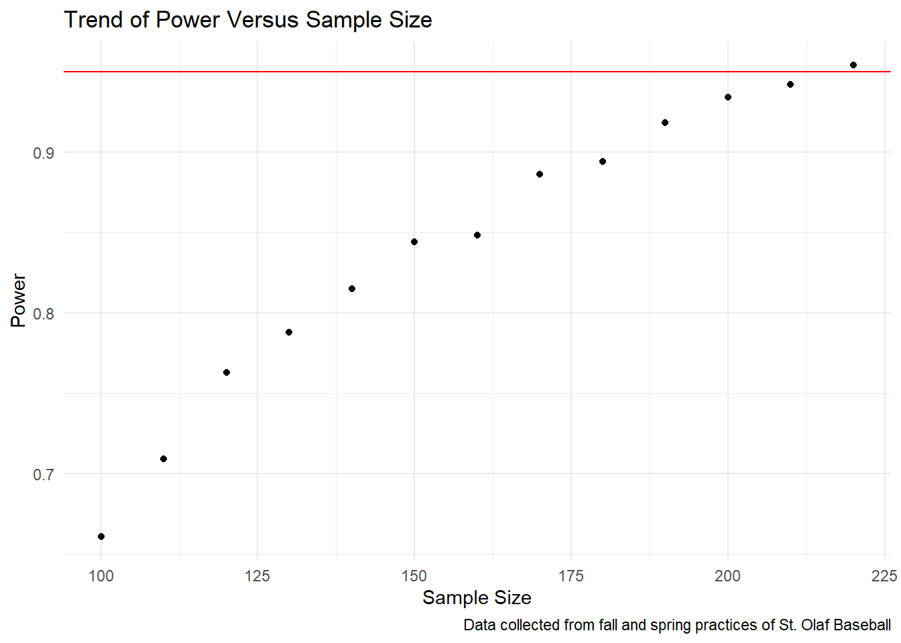

The Stuff + model. A baseball model that I co created that hopes to observe the movement profile of a each players pitches in a vacuum. Then using the observations generates a quantitative model using machine learning to quantify each pitch. However, we are at a roadblock which is limited data. Currently we think our model works, but we only have access to the data of around 20 pitchers. That sample is not large enough in my opinion. I would like to run a randomization test to see if the model is significant. Then test the power of this model, so we can get an idea on how many samples will be needed to get a significant p value.
First the data needed to be downloaded. All of this data came from St. Olaf Baseball practices throughout the fall of 2023 and spring of 2024. Then initial modeling yielded an observed correlation of -.233. A randomization test was ran by shuffling the response variable of FIP (Fielding Independent Pitching)
library(dplyr)
Attaching package: 'dplyr'
The following objects are masked from 'package:stats':
filter, lag
The following objects are masked from 'package:base':
intersect, setdiff, setequal, union
The shuffling of FIP was ran 1000 times to create a random distribution. The graph below displays the distribution of those shuffled samples with the red line representing the observed sample.
`stat_bin()` using `bins = 30`. Pick better value with `binwidth`.

Since our observed correlations did not fall outside of the range of possible random outcomes, the next step is to find the power of the model. This power calculation will give an idea of how many samples will be needed to determine if the Stuff + model is truly significant.
First a set of parameters were set for the simulation. The parameters represent the intercept, slope, and standard error of the observed model. A function was created to make values of X_FIP, or expected FIP based on simulating the Stuff + model. Values of expected FIP were simulated using a sample of 100 randomized Stuff + models.
Using that function, a second function was created to estimate power for a sample size of 100. That simulated value varies but normally falls between .65 and .75. Finally a while loop was created which ran the estimate power function with increasing values of sample size until power reached above the .95 threshold. A power over that threshold represents a sample large enough to make the model significant.
model_intercept<-20.2771model_slope<--.1496model_sd_error <-2.544min_stuff_plus<-min(stuff_plus_data$Stuff_Plus)max_stuff_plus<-max(stuff_plus_data$Stuff_Plus)simulate_expected_fip <-function(n, intercept, slope, sd_error,m,ma) { stuff_plus <-runif(n, min = m, max = ma) error <-rnorm(n, mean =0, sd = sd_error) x_fip <- intercept + slope * stuff_plus + error model <-lm(x_fip ~ stuff_plus) summary(model)$coefficients[2, 4] }simulate_expected_fip(100,model_intercept,model_slope,model_sd_error,min_stuff_plus,max_stuff_plus)
The simulation yields that a sample between 210 and 230 observations should be large enough to make Stuff + significant by itself. Below is a graph displaying an example of how power trends as sample size increases.
sample_table <-tibble(Sample_Size=c(100,110,120,130,140,150,160,170,180,190,200,210,220),Power=c(.661,.709,.763,.788,.815,.844,.848,.886,.894,.918,.934,.942,.954))ggplot(sample_table, aes(x= Sample_Size, y= Power))+geom_point()+geom_hline(yintercept = .95, color="red")+theme_minimal()+labs(title="Trend of Power Versus Sample Size", x="Sample Size", caption="Data collected from fall and spring practices of St. Olaf Baseball")

These groups of simulations showed that the Stuff + model by itself is not significant yet. However, gathering a sample size of roughly 220 observations in the next year of time seems very reasonable. With an increased sample size, and the re running of machine learning algorithms, I am very hopeful that this model will get significantly more accurate. The other very exciting part of this simulation is that Stuff + only makes up a part of a part of the total pitching model, and is the least accurate piece. If all it takes for Stuff + to be significant is just over 200 observation, that makes me excited about how accurate the entire model can get with increased sample size.